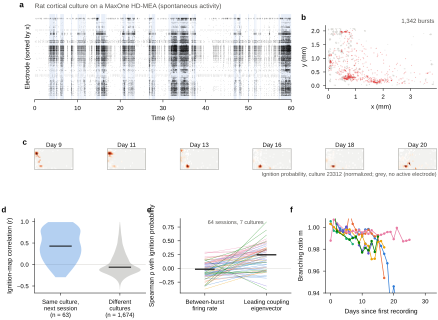
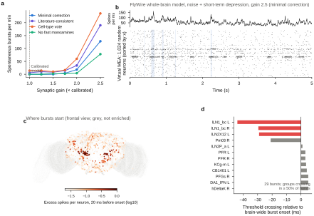
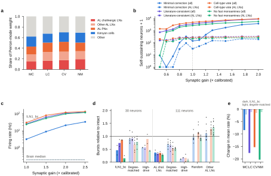
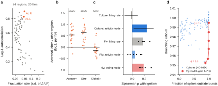
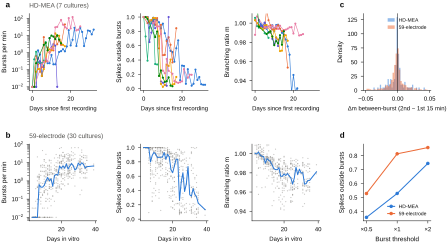
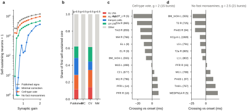
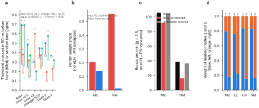
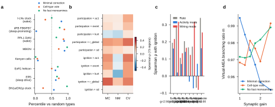

Article (submission format) · Summary 223 words · Main text 4,029 words · Methods 1,516 words · 4 figures · 4 Extended Data figures · 42 references
Neural networks are never silent. Dissociated cortical cultures generate spontaneous network bursts that start at preferred sites1–3, but whether an intact brain's wiring contains comparable ignition sites is unknown. In public high-density recordings of seven developing rat cortical cultures (114 sessions, 30,349 bursts)4, bursts began at hot spots that recurred from day to day, and the leading eigenvector of between-burst functional coupling predicted these locations better than firing rate did. We then gave a whole-brain spiking model of the Drosophila connectome5–7 the same conditions — weak noise and short-term synaptic depression. Bursts became frequent at 2–2.5 times the behaviourally calibrated synaptic gain. The two leading modes of the excitatory wiring were mirror-image loops in the left and right antennal lobes, built from cholinergic local neurons and projection neurons. One local-neuron type (lLN1_bc) was among the 0.15% most active neurons of the model, and under literature-consistent transmitter assumptions this loop fired tonically and supplied about half of the brain's excitatory synaptic drive. Silencing the 111 cholinergic local neurons reduced spontaneous bursting to 0.25–0.47 of intact under all four assumptions, more than silencing neurons with matched synapse counts. In resting-state imaging of 20 flies8, the antennal lobe showed the slowest spontaneous fluctuations. The antennal lobe's recurrent excitatory loop is therefore a candidate hub of the fly's spontaneous activity.
Spontaneous activity is a basic property of neural tissue. Its simplest form is seen in dissociated cortical neurons grown on multielectrode arrays (MEAs): within one to two weeks they self-organize into networks that fire brief, synchronized network bursts separated by seconds of sparse activity1,9. These bursts do not start at random. A small set of neurons or locations — leaders, or nucleation sites — fires first in most bursts and keeps doing so for hours2,10–12. Theory explains this as noise focusing: network topology funnels independent background noise into a few places where recurrent excitation converges, and those places ignite the whole network3. Cultured networks have also become a reference for collective dynamics near a critical point9,13–15 and for sleep-like states that arise without a brain16.
Whether these culture-level properties carry over to an intact brain is an open question. The adult Drosophila brain is now mapped synapse by synapse5,6, and a leaky integrate-and-fire (LIF) model built from this wiring with a single free parameter predicts sensorimotor transformations that were confirmed experimentally7. Spontaneous activity has been approached from the connectome in three ways: structural connectivity predicts region-to-region correlations of resting-state calcium signals8,17; a rate model fitted to such data identified inhibitory hubs that keep spontaneous activity bounded18; and eigen-decomposition of a linearized connectome model describes its intrinsic dynamical modes19. An earlier whole-brain model built from light-microscopy data showed that short-term synaptic depression stabilizes the network20. Where spontaneous population events start in the fly brain, and which neurons drive spontaneous activity, has not been addressed.
Here we asked the same three questions of both systems with the same measures: where do spontaneous bursts ignite, what predicts the ignition site, and how close to runaway does the network operate? Cultured cortex suggested that ignition follows the leading mode of the network's coupling. In the fly connectome under culture-like conditions, the leading excitatory modes, direct simulation and silencing all pointed to the recurrent excitatory loop of cholinergic local neurons and projection neurons in the antennal lobe (AL). We define a hub here as a small set of neurons on which brain-wide spontaneous bursting depends disproportionately. Because synaptic signs in the connectome are uncertain, every fly result was computed under several transmitter assumptions, and we report where they disagree.
We analysed DANDI dataset 002020 (ref. 4; Nakamuta et al.21): rat cortical cultures recorded on MaxOne high-density MEAs22 for 30 min on most days of their development, with about 1,000 of 26,400 electrodes routed per session (Fig. 1a). After excluding 15 nearly empty sessions, 114 sessions from seven cultures contained 30,349 network bursts (median 1.6 bursts per min, interquartile range (IQR) 0.23–8.2; median duration 390 ms; median participation 94% of active electrodes; Methods). Burst and ignition parameters were fixed before cross-session results were inspected; three analyses (the eigenvector predictor, a control for electrode routing and a random-window null) were added after a first look, and burst statistics were checked at half and double the burst threshold (Methods).
Bursts began locally. The first 20 spikes of a burst covered 0.62 times the radius of 20 random spikes from the same burst (median ratio; below 1 in 69 of 70 sessions with at least 20 analysable bursts; P = 4 × 10−13), and the 10% of electrodes that fired first most often supplied the first spike of 81% of bursts, against 48% expected from where burst spikes occurred. The ignition points formed a few hot spots (Fig. 1b,c) that recurred within a culture: ignition maps of consecutive sessions correlated with r = 0.43, against r = −0.06 for pairs of sessions from different cultures (Mann–Whitney P = 9 × 10−18; higher in 7 of 7 cultures; Fig. 1d), and consecutive hot spots lay 0.58 mm apart against 1.75 mm between cultures. The ignition pattern was not a copy of where burst activity was densest; the residual map (ignition minus burst-activity density) was also stable (r = 0.39 versus 0.02, 7 of 7 cultures). Two caveats temper this result. Ignition points were only modestly more concentrated than centroids of random 20-spike windows from the same bursts (concentration 0.56 versus 0.48; 5 of 7 cultures), and consecutive sessions shared more of their electrode routing than sessions from different cultures (Jaccard overlap of covered area 0.49 versus 0.10).
The noise-focusing idea predicts that bursts start where background activity converges. The simplest proxy, the firing rate of a 100-µm location between bursts, did not predict ignition probability (Spearman ρ = 0.01, median across 70 sessions; Fig. 1e). The weight of each location in the leading eigenvector of the between-burst functional-coupling matrix — the pattern along which coordinated background fluctuations are largest — did (ρ = 0.25, IQR 0.03–0.35; 64 sessions; P = 6 × 10−8; positive in 7 of 7 cultures) and beat the firing rate in 88% of sessions (56 of 64; Fig. 1e). Three qualifications apply. Ignition probability tracked how many electrodes were routed nearby (ρ = 0.40) more strongly than it tracked the eigenvector, and after controlling for routing the eigenvector effect was modest (partial ρ = 0.14, IQR −0.03 to 0.29; positive in 7 of 7 cultures). At the level of single electrodes, between-burst firing rate did predict a channel's share of the first spikes (ρ = 0.46, 7 of 7 cultures), and the eigenvector did not beat it (53% of sessions). On coarse 59-electrode arrays the two predictors tied (Extended Data Fig. 1). Thus, in cultured cortex, the locations where bursts start are better described by where coordinated noise concentrates than by where activity is highest, but the effect is moderate.
To place every system on one scale we estimated the branching ratio m — the average number of spikes triggered by one spike — with the subsampling-invariant multistep-regression estimator15 on population activity in 4-ms bins. Cultured networks were close to, but below, runaway: m = 0.992 (IQR 0.985–0.997) in the HD-MEA cultures and 0.986 in the replication set (Wagenaar et al.1; 30 cultures, 526 of 527 recordings), with intrinsic timescales of a few hundred milliseconds. Removing the bursts (±100 ms) did not lower m (0.995 and 0.991), so the between-burst activity itself reverberates. With development, bursts became more frequent (7 of 7 and 29 of 30 cultures) and absorbed a growing share of spikes, while m moved away from 1 (whole session: 7 of 7 and 30 of 30 cultures; Fig. 1f and Extended Data Fig. 1). Within a 30-min session, m did not rise: whole-session m fell very slightly in both datasets (Δm = −0.0004 and −0.0002 between the first and second 15 min; P = 0.01 and 2 × 10−4), and between-burst m was unchanged in the HD-MEA cultures and fell slightly in the replication set (Δm = −0.0018; P = 8 × 10−8) — a fatigue-like rather than a potentiation-like drift23.
We next gave the whole-brain LIF model of the FlyWire connectome (138,639 neurons, 15.1 million connections, 54.5 million synapses)5–7 the two ingredients that make cultures burst: background noise and short-term synaptic depression. Every neuron received independent Poisson 'spontaneous spikes' at 0.3 Hz, and every synapse depressed with use (Tsodyks–Markram model24; utilization 0.05, recovery 2 s; Methods). A gain factor g multiplied all synaptic weights, with g = 1 being the published model whose single free parameter was calibrated against behaviour7.
Synaptic signs come from machine-learning transmitter predictions that are partly wrong25, so we used four sign assumptions (Methods). With the published signs, any background noise drove the olfactory system into self-sustained runaway, caused by 40 AL local neurons predicted with low confidence to be serotonergic and therefore treated as excitatory (Extended Data Fig. 2). The 'minimal correction' made these 40 neurons inhibitory. Because 21 of them, including 7 of the 30 lLN1_bc neurons, belong to cell types that are cholinergic in the literature6,26, we added a 'literature-consistent minimal correction' that flips only the other 19. The third and fourth assumptions assign one transmitter per cell type, with literature-known transmitters taking precedence ('cell-type vote'), with and without fast synaptic effects of monoamines ('no fast monoamines').
At the calibrated gain the model did not burst under the minimal correction or without fast monoamines and produced small bursts at a low rate under the two other assumptions (0–16 per min; Fig. 2a). Bursts became frequent (more than 50 per min) at gains of 2.0–2.5 under all four assumptions (78–236 per min at 2.5). Model bursts were brief (median 18–40 ms) and recruited a smaller share of neurons than culture bursts (Fig. 2b); at g = 2.5 the model still emitted 79–95% of its spikes outside bursts, against a median of 53% in HD-MEA cultures. The calibrated fly brain therefore sits at or below the onset of culture-like bursting, roughly a factor of two in synaptic gain away from frequent bursting.
To locate ignition we recorded every spike of the whole brain and asked, for each cell type in each hemisphere, whether it fired in excess during the 20 ms before burst onset and whether it crossed its own noise threshold in the 50 ms before onset more often than at random times far from bursts (Methods). Under the original minimal correction (29 bursts at g = 2.5), the clearest early groups were the cholinergic AL local neurons of type lLN1_bc in both hemispheres and the cholinergic-predicted type lLN2X12 (Fig. 2c,d). lLN1_bc fired three times more spikes than expected in the 20 ms before onset and crossed threshold before 69% (left) and 38% (right) of bursts, against 28% and 18% of random times (Fisher P = 1 × 10−5 and 0.01); among bursts in which they crossed, the median crossing came 44 ms (left) and 30 ms (right) before brain-wide onset. On a frontal map of the brain, neurons firing in excess before onset clustered in the two antennal lobes (Fig. 2c). The effect was moderate and varied between runs: across six runs with halved or doubled noise, stronger depression or other seeds, at least one cholinergic AL local-neuron group crossed threshold before bursts significantly more often than at random times in five (P < 0.05), with pre-burst crossing probabilities 1.7–2.7 times the false-alarm rate of 10–37% (Extended Data Fig. 3).
This early firing, however, depended on the original minimal correction, which made 7 of the 30 lLN1_bc neurons inhibitory. Under the literature-consistent correction, the cell-type vote and without fast monoamines, these neurons did not lead bursts; instead they fired continuously (lLN1_bc at 100–136 Hz and all 111 cholinergic local neurons at 37–60 Hz at g = 2.0–2.5), and bursts started in the visual system — photoreceptor terminals and lamina and medulla neurons — and in the central complex (48, 15 and 21 bursts; Extended Data Fig. 2). Even at the calibrated gain, lLN1_bc were among the most spontaneously active neurons of the brain (3.2, 26, 31 and 24 Hz under the minimal correction, literature-consistent correction, cell-type vote and no-fast-monoamine assumptions, against a median of 0.2 Hz; median rank within the top 0.15% of 138,639 neurons; Fig. 3c). In the literature-consistent assumptions these neurons are therefore best described as a tonically active driver rather than a trigger; their role in bursting is tested by silencing below.
Why the antennal lobe? Following the culture result, we asked where the leading modes of the network's coupling lie — here computed directly from the wiring rather than from activity. The two leading eigenvectors of the excitatory connectivity matrix, the patterns that grow first when excitation is scaled up, were mirror images: one placed 77–84% of its weight in the left hemisphere and the other 78–85% in the right, with eigenvalues within 6–18% of each other (Extended Data Fig. 3). Each placed 28–35% of its weight on AL local neurons (15–19% on cholinergic local neurons and 8–13% on lLN1_bc alone), 15–19% on AL projection neurons and 17–19% on Kenyon cells of the mushroom body, under all four assumptions (Fig. 3a). These weights largely track excitatory input (Spearman ρ = 0.61–0.64 with excitatory in-degree). With signed connectivity, the leading real mode under the cell-type vote and no-fast-monoamine assumptions was again centred on AL local neurons (37–39% of its weight); under the minimal correction the leading signed mode was an oscillatory (complex) mode of the optic lobe. The 30 lLN1_bc neurons make about 112,000 output synapses (3,740 per neuron, against a brain median of 227), mostly onto other AL local neurons and projection neurons, and 74–92% of their input synapses come from excitatory partners, so they form a dense, weakly inhibited recurrent excitatory loop. Without short-term depression, the first self-sustained activity appeared as small, seed-dependent groups of neurons; lLN1_bc joined the self-sustained core at g = 0.8 (minimal correction), 0.6 (no fast monoamines) and at or below 0.5 (cell-type vote), that is, below the calibrated gain (Fig. 3b and Extended Data Fig. 2).
Across all cell-type groups, however, the structural mode predicted ignition only about as well as firing rate did (Spearman ρ of Perron weight per neuron 0.12–0.32 versus 0.11–0.29 for between-burst rate in six runs under the minimal correction; 0.25 versus 0.34 under the cell-type vote; −0.08 versus −0.07 without fast monoamines). The culture method itself — the leading eigenvector of simulated between-burst correlations — predicted ignition worse than either (ρ = −0.07 to 0.16; Fig. 4c and Extended Data Fig. 4), because its leading mode picked out strongly correlated, tonically active central-complex neurons. In the fly the leading wiring modes therefore point to the hub, but they do not rank the rest of the brain better than firing rate does, and the activity-based estimate that worked in cultures does not transfer.
If cholinergic AL local neurons are a hub, removing them should suppress spontaneous bursting more than removing comparable neurons. Because these neurons have unusually many output synapses (3,740 per lLN1_bc neuron) and high rates, random neurons are not a sufficient control. We therefore silenced the outputs of the 111 AL local neurons with cholinergic cell-type identity and of the 30 lLN1_bc neurons, and compared them with excitatory neurons outside the AL local-neuron class that had the same output-synapse counts ('degree-matched', three draws) or the largest product of output synapses and spontaneous rate ('high-drive'), at two gains under each of the four assumptions (20-s runs, three seeds; Fig. 3d). Silencing the 111 cholinergic local neurons reduced bursting to 0.25–0.47 of the intact rate in all eight conditions, below every degree-matched draw in seven of them (degree-matched mean 0.60, range 0.31–0.89), and lowered the brain-wide mean firing rate by 6–25% (degree-matched, 3–5%). In an earlier set of controls under three assumptions, 15 random and other-AL-local-neuron sets of the same size gave 0.74–1.74. Silencing the 30 lLN1_bc neurons alone had variable effects (0.05–0.88; below all degree-matched draws in five of eight conditions). The high-drive sets, however, suppressed bursting even more strongly (111 neurons: 0.03–0.31). Under the three literature-consistent assumptions these sets consisted mainly of AL projection neurons — the partners that the cholinergic local neurons excite — whereas under the original minimal correction they were a mixture of central, visual and AL neurons. Consistent with this, the 111 strongest excitatory drivers at the calibrated gain (by output synapses × rate) were 77–82% AL cholinergic local neurons and projection neurons under the literature-consistent assumptions and supplied 49–56% of all excitatory synaptic events in the model (24% under the original minimal correction). Spontaneous bursting in the model therefore depends on a small number of strongly driving excitatory neurons, most of which form the AL loop of cholinergic local neurons and projection neurons.
The loop's structure did not depend on the disputed chemical synapses from the local neurons onto projection neurons (see Discussion): after removing all 90,491 such synapses, cholinergic local neurons still carried 21% (minimal correction) and 56% (no fast monoamines) of the leading-mode weight, and silencing lLN1_bc still reduced bursting 2.4-fold without fast monoamines (38.8 to 16.3 per min; 30 random neurons, 36.7), whereas under the minimal correction the reduction (104 to 92 per min) was within run-to-run variability (Extended Data Fig. 3).
The model suggests that the antennal lobe should stand out in spontaneous activity. We examined resting-state two-photon imaging of 20 flies expressing pan-neuronal GCaMP6s without stimulation (Turner et al.8; 1.2 volumes per s, about 28 min per fly, 74 atlas regions). Of all regions, the right antennal lobe had the highest lag-1 autocorrelation and the left the fourth highest (Fig. 4a). Across flies, the antennal lobes fluctuated more slowly (lag-1 autocorrelation 0.85 versus a median of 0.58 for other regions; higher in 18 of 20 flies; Wilcoxon P = 1 × 10−5) and with larger amplitude (s.d. of ΔF/F 0.048 versus 0.029; 19 of 20 flies; P = 1 × 10−5) than the rest of the brain, while being slightly less coupled to the brain-wide signal (5 of 20 flies higher; P = 0.04; Fig. 4b). Because brighter regions have better signal-to-noise and therefore higher autocorrelation, we regressed autocorrelation on log mean fluorescence across regions within each fly; the antennal lobes remained slower than the median region in 17 of 20 flies (P = 4 × 10−5). This is consistent with a generator of slow spontaneous activity within the antennal lobe, although slow sensory input to the antennae, region size and the high density of receptor-neuron terminals could contribute. A region-by-region comparison between model burst participation and real fluctuation measures was weak (|ρ| ≤ 0.30 across 73 regions; Extended Data Fig. 4).
Because synchronized bursting in cultures has been likened to sleep16, we asked whether model bursts preferentially recruit the fly's sleep-regulating neurons: the R5 ring neurons, which show sleep-need-dependent slow-wave synchrony27, the dorsal fan-shaped body28,29, helicon cells28 and clock neurons. Relative to random central-brain cell types, none of these was consistently over-recruited across sign assumptions (Extended Data Fig. 4). The simulated bursts thus do not provide a direct route from spontaneous ignition to the sleep homeostat.
Cultured networks and the fly connectome were analysed with the same questions and measures. In cultured cortex, bursts started at hot spots that recurred over days, and at the scale of 100-µm locations these were better predicted by the leading mode of between-burst coupling than by firing rate, although routing density and single-electrode firing rates also carried information. In the fly connectome, the leading modes of the excitatory wiring were the left and right olfactory loops centred on cholinergic AL local neurons. These neurons were among the most spontaneously active of the model; under literature-consistent transmitter assumptions they drove the brain tonically rather than triggering bursts, and silencing them suppressed spontaneous bursting under every assumption, more than silencing neurons matched for output synapses. Silencing the strongest drivers outside this class, mostly projection neurons of the same loop, suppressed bursting even more, so the hub is the antennal lobe's excitatory loop rather than a single cell type. The parallel between the two systems is therefore qualitative: in both, spontaneous bursts are organized by where recurrent excitation concentrates, but the culture's activity-based estimate of that structure did not transfer to the fly model, and in the fly the hub is also highly active, so structure and activity are not fully separable.
The prediction is consistent with what is known about these cells. Cholinergic local neurons were first described as about 15 cells per antennal lobe that spread diffuse excitation across glomeruli26,30, and paired recordings found reciprocal excitatory connections between them and with projection neurons31. Several findings constrain the interpretation. First, their excitation of projection neurons is largely electrical32, whereas the connectome contains only chemical synapses; the hub persists structurally without these synapses, carried by connections among the local neurons themselves, but its causal weight then depends on the transmitter assumption. Second, in vivo these neurons are barraged by spontaneous inhibition32, interglomerular inhibition outweighs excitation33, and at rest projection-neuron activity is driven mainly by receptor input rather than by network activity34. Third, pharmacological disinhibition of the antennal lobe with picrotoxin and CGP54626 increased odour responses but was not reported to produce spontaneous runaway26,33. Our model agrees that the calibrated network does not burst; it places frequent bursting at about twice the calibrated gain, which together with these observations suggests that the real antennal lobe operates well below runaway. Fourth, local neurons labelled by lines used to study excitatory local neurons are partly GABAergic35, so the correspondence between FlyWire's lLN1_bc and physiologically characterized excitatory local neurons remains to be established. Notably, the first olfactory cortex is the most seizure-prone region of the mammalian brain36–38, suggesting that dense recurrent excitation in early olfactory circuits may make them a weak point for runaway activity in both lineages.
The results suggest four experiments. (1) Whole-cell or voltage-imaging recordings should find lLN1_bc-type neurons among the most spontaneously active central neurons; their spontaneous rates in vivo have, to our knowledge, not been reported. (2) Genetic silencing of these neurons, or of the loop's projection neurons, should reduce spontaneous fluctuations in the antennal lobe, lateral horn and mushroom body in resting-state imaging8,17. (3) Manipulations that raise excitability beyond standard disinhibition, such as combined disinhibition and elevated temperature, should produce spontaneous synchronous events first in the antennal lobe, preceded by activity of these neurons. (4) In cultures, the leading coupling mode computed from a few minutes of between-burst activity predicts the next day's ignition hot spots, which can be tested by patterned optogenetic stimulation of predicted versus control sites.
The culture results also bear on how close to runaway a network operates and how this changes with use. Cultured networks sat at m ≈ 0.99, consistent with previous estimates15, but developed away from m = 1 as bursts took over, in line with the idea that strong bursting and reverberating background activity trade off39. Within a session we saw no build-up of m, which argues against a synaptic-homeostasis-like increase of effective coupling on a 30-min timescale23. In the fly model the branching ratio of a 1,024-neuron sample was highest at the calibrated gain and fell as bursts appeared (Fig. 4d), so in this model it reflects slow tonic fluctuations rather than distance to runaway; the gain at which bursting begins is the more meaningful measure. Wake-associated synaptic growth in flies40 is far smaller than a doubling of synaptic gain.
This study has clear limitations. The LIF model has no gap junctions, neuromodulation, adaptation or graded transmission; noise and depression were uniform; and transmitter identity is uncertain, which is why the hub's role differed between assumptions: it triggered bursts only under an assumption that conflicts with the literature for 7 of its neurons. Silencing effects are counts of brief model bursts in 20-s runs, and the high-drive controls show that the effect follows synaptic drive: any population supplying as much excitatory drive would matter, and in the model that population is mostly the AL loop. Culture data were unsorted electrode-level detections with unknown days in vitro, and ignition maps were partly confounded by electrode routing. The fly imaging data have a temporal resolution of about 0.8 s, far too slow to resolve ignition directly. Despite these limits, connectome structure, simulation, silencing and resting-state imaging converge on one small circuit, making the antennal lobe's excitatory loop of cholinergic local neurons and projection neurons a concrete, testable candidate hub of the fly's spontaneous activity.
HD-MEA dataset. DANDI 002020 (version 0.261004.1410)4,21 contains spontaneous activity of seven dissociated rat (E18) cortical cultures recorded on MaxOne HD-MEAs (26,400 electrodes, 17.5-µm pitch, about 1,000 routed per session) for 30 min on 11–30 days per culture (129 sessions). Spikes are channel-level threshold detections (not spike-sorted) with electrode coordinates. Days in vitro are not provided; we used days since each culture's first recording, so only within-culture trends were interpreted. Channels with at least 0.1 Hz were active. Sessions with fewer than 30,000 spikes (scaled to channel number and duration) were excluded (15 sessions).
Replication dataset. Spike times of 30 dense rat cortical cultures recorded on 59-electrode MEAs (200-µm pitch) at 3–39 days in vitro (527 recordings, about 45 min each; one nearly empty recording excluded) were obtained from Wagenaar et al.1; channel numbers were converted to grid positions with the authors' tables.
Network bursts. Population spike counts in 10-ms bins; a burst was a maximal run of bins at or above half of a high threshold, max(5 × median count, 0.1 × number of active channels, 5), containing at least one bin at or above that threshold; runs separated by less than 100 ms were merged, and events recruiting less than 20% of active channels were not counted as bursts. This recruitment rule was added after inspecting four traces and before any cross-session analysis. Burst parameters were fixed across sessions; burst statistics were recomputed at half and double the threshold, the number of ignition spikes and the recruitment criterion.
Ignition. The ignition point of a burst was the centroid of its first 20 spikes. Ignition maps were counts on a 100-µm grid (Gaussian smoothing σ = 100 µm) normalized by the number of bursts; analyses required at least 20 bursts per session. Stability was the Pearson correlation of maps of consecutive analysable sessions over grid bins covered in both, compared with all pairs of sessions from different cultures. Predictors were computed per bin and correlated with ignition probability by Spearman's ρ: between-burst firing rate (bins farther than 100 ms from any burst), in-burst rate, local density and the leading eigenvector of between-burst functional coupling. For the last (added after a first look at the results), between-burst spike counts in 20-ms bins were correlated (Pearson) between channels with at least 30 between-burst spikes; negative values, the diagonal and pairs closer than 50 µm (possible duplicate detections) were set to zero, and the leading eigenvector was taken. Partial correlations controlled for the number of routed active electrodes within 200 µm. A random-window null used centroids of 20 consecutive spikes at random positions within the same bursts.
Branching ratio. The branching ratio m was estimated by multistep regression15: for population counts At in 4-ms bins, slopes rk of At+k on At for k = 1–50 were fitted with rk = b mk; τ = −4 ms/ln m. The between-burst estimate used segments of at least 1 s outside bursts ±100 ms. The same estimator (one implementation) was used for cultures and model.
Model and simulator. We used the LIF model of Shiu et al.7,41 with the FlyWire v783 connectome5,6 and its published constants (resting and reset potential −52 mV, threshold −45 mV, membrane time constant 20 ms, synaptic time constant 5 ms, refractory period 2.2 ms, delay 1.8 ms, 0.275 mV per synapse). Our event-driven GPU implementation reproduces the original Brian 2 code42 neuron by neuron (Pearson r ≥ 0.999), including the discarding of synaptic input during the refractory period. It was extended with: (1) spontaneous drive, independent Poisson suprathreshold kicks to every neuron (0.3 Hz unless stated); (2) a gain g multiplying all synaptic weights; (3) Tsodyks–Markram short-term depression of each neuron's outputs24 (each spike transmits with the current resource x, which drops by a fraction U = 0.05 and recovers with τ = 2 s); and (4) per-trial silencing, which removes a neuron's outgoing synaptic events. Time step 0.1 ms.
Transmitter assumptions. Synaptic signs follow transmitter identity (acetylcholine excitatory; GABA, glutamate and histamine inhibitory; monoamines excitatory as in ref. 7). 'Minimal correction': the published signs, except that 40 AL local neurons predicted with low confidence to be serotonergic25 were made inhibitory (the correction of our previous study). 'Literature-consistent minimal correction' (added after internal review): as the minimal correction, but the 21 of these neurons whose cell type has a literature-known acetylcholine identity in FlyWire's annotation6 (including 7 lLN1_bc) stay excitatory. 'Cell-type vote': one transmitter per cell type (sum of prediction confidences over members), overridden by literature-known transmitters (also voted per cell type); 15,901 neurons changed sign relative to the published model. 'No fast monoamines': as the cell-type vote, but dopaminergic, serotonergic, octopaminergic and tyraminergic neurons had no fast synaptic effect.
Self-sustained activity. Without depression, all neurons received 0.5-Hz drive for 500 ms; neurons firing at least 10 Hz 1–2 s after the drive stopped formed the self-sustained core (three seeds per gain).
Bursts and ignition. Bursts were runs of at least 10 ms in which the 20-ms smoothed population rate exceeded 1.5 times the expected background (number of neurons × drive rate) plus 30 spikes per ms. For ignition, onsets were refined to the last millisecond at which the 5-ms smoothed rate was below 1.25 times background plus 10 spikes per ms. For every cell type × hemisphere group, pre-onset excess compared spikes in the 20 ms before onset, summed over bursts, with the number expected from the group's rate at least 200 ms from any burst (one-sided Poisson test; this ignores overdispersion and is used only for ranking). A group crossed threshold when its spike count in a 5-ms window exceeded max(baseline + 5 Poisson s.d., 3 spikes). Crossing times are medians over bursts in which the group crossed (search from 50 ms before onset). As a false-alarm null, the same test was applied in the 50 ms before 500 random times at least 300 ms from any burst, and burst and random crossing frequencies were compared with Fisher's exact test. Ignition runs were 10 s; burst statistics used 15-s runs with two seeds.
Structural modes. The leading eigenvectors of the excitatory connectivity (synapse counts from excitatory neurons) and the eigenvalues with the largest real part of the signed connectivity were computed with ARPACK. Weights were summed per cell type × hemisphere and divided by group size for correlation with ignition.
Silencing. Outputs of a neuron set were removed and bursts were counted at two gains per assumption (20-s runs, three seeds). Sets: the 111 AL local neurons with cholinergic identity under the cell-type vote; the 30 lLN1_bc neurons; size-matched random neurons and AL local neurons of other transmitters (five draws each); and, added after internal review, excitatory neurons outside the AL local-neuron class matched for output-synapse count (three draws) or chosen as those with the largest product of output synapses and spontaneous rate ('high-drive'). A preliminary sweep used 8-s runs at five gains and included all 5,177 Kenyon cells. The eLN→PN control removed all chemical synapses from the cholinergic AL local neurons onto AL projection neurons (90,491 synapses).
Sleep circuits. In-burst peak over baseline activity was computed for ER5 ring neurons, dorsal fan-shaped body types FB6 and FB7, helicon cells (ExR1), DN1 and l-LNv clock neurons, PPL1 dopaminergic neurons and mushroom-body output neurons, and compared with 500 random draws of the same number of central-brain cell types.
Virtual MEA. Spikes of 1,024 randomly chosen neurons were analysed with the culture measures (out-of-burst fraction, branching ratio).
Region time series of Turner et al.8 (20 flies, nSyb-GAL4 > GCaMP6s, about 1.2 Hz volumetric two-photon imaging, no stimulus, Ito atlas regions) were loaded with a restricted unpickler. ΔF/F used an 8th-percentile baseline in a 60-s window. Per region we computed the s.d., excess kurtosis, lag-1 autocorrelation, correlation with the mean of all other regions, and mean z-scored activity in frames where the global signal was in its top 5%. Antennal lobes were compared with the median of other regions within each fly (Wilcoxon signed-rank test; one fly with unusually large fluctuations was retained). For the signal-to-noise control, lag-1 autocorrelation was regressed on log mean raw fluorescence across regions within each fly and residuals were compared. Model burst participation per neuropil used each neuron's fraction of synapses in each FlyWire neuropil.
Culture statistics are medians across sessions with IQRs; because sessions of one culture are not independent, every claim is also reported as the number of cultures in which the effect had the same sign. Tests are two-sided unless stated. Model silencing effects are reported as burst rates relative to the intact model, with the full range of control sets; counts per condition are given in the source data.
All data are public: DANDI 002020 (ref. 4), the Wagenaar et al. dataset1, FlyWire v783 connectivity and annotations5,6,41 and the Turner et al. imaging data8. All code, intermediate results and figure scripts are in the GitHub repository fly_culture_spontaneous.
We thank the authors of the public datasets and of the FlyWire connectome and its whole-brain model for sharing data and code.
K.T. conceived the study; analyses and writing were carried out with Claude (Anthropic), an AI assistant.
The author declares no competing interests.







